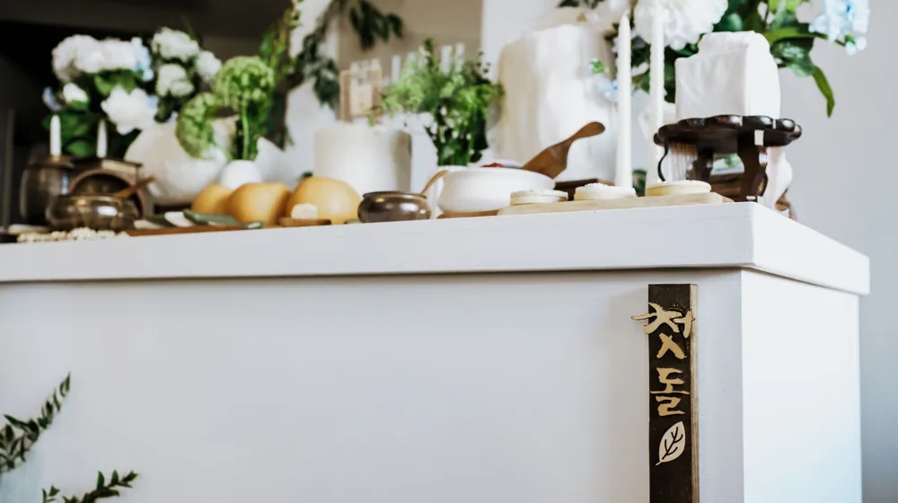

집에서 만드는 떠먹는 막걸리, 이화주 키트 실패 없이 성공하는 법
사진: 대정 김 / Pexels (무료 이미지, 출처 표기)
요거트처럼 떠먹는 막걸리, 이화주란 무엇인가요?

물 없이 요거트처럼 수저로 떠먹는 막걸리, 이화주를 들어보셨나요? 이화주(梨花酒)는 고려시대부터 전해 내려오는 한국의 전통 탁주입니다. 이름 그대로 배꽃(梨花)이 필 무렵인 봄철에 담근다고 하여 이러한 이름이 붙었습니다.
일반적인 막걸리와 달리 제조 과정에서 물을 거의 넣지 않는 것이 특징입니다. 구멍떡(가운데에 구멍을 뚫어 끓는 물에 삶아낸 떡)이나 범벅을 빚어 누룩과 함께 발효시켜 만듭니다. 농도가 아주 걸쭉하여 마치 커스터드 크림이나 플레인 요거트 같은 묵직하고 부드러운 식감을 자랑합니다. 새콤달콤한 맛 뒤에 은은한 알코올 향이 올라와 독특한 매력을 풍깁니다.
이화주 만들기 키트 구성과 개인 준비물
전통 방식으로 이화주를 만들려면 쌀을 삭히고 누룩을 직접 디뎌야 해서 여간 까다로운 것이 아닙니다. 하지만 최근에는 초보자도 반나절 만에 밑작업을 끝낼 수 있는 홈브루잉 키트가 다양하게 출시되어 있습니다. 키트를 구매하면 까다로운 계량 과정 없이 간편하게 시작할 수 있습니다.
한국농수산식품유통공사(aT) 전통주 갤러리의 자문에 따르면, 전통 가양주(집에서 빚는 술)를 만들 때 가장 중요한 것은 도구의 위생과 정확한 온도 관리입니다. 키트를 열기 전, 아래 표를 참고하여 필요한 준비물을 미리 세팅해 두면 과정이 훨씬 수월해집니다.
초보자도 따라 하는 이화주 담그기 4단계
이화주 키트를 활용한 실제 제조 과정은 생각보다 단순합니다. 다만 중간에 쌀 반죽을 충분히 식히는 과정과 꼼꼼히 치대는 정성이 맛을 결정합니다. 다음 단계를 차근차근 따라 해보세요.
- 반죽 만들고 익히기: 준비된 쌀가루에 뜨거운 물을 조금씩 부어가며 익반죽을 합니다. 둥글게 빚은 뒤 가운데 구멍을 뚫어 '구멍떡' 모양을 만듭니다. 이를 끓는 물에 넣어 떡이 위로 떠오를 때까지 삶아 건져냅니다.
- 완벽하게 식히기 (매우 중요): 건져낸 떡을 넓은 그릇에 담고 주걱으로 으깨며 식힙니다. 반죽의 온도가 25도 이하로 내려갈 때까지 완전히 식혀야 합니다. 반죽이 뜨거운 상태에서 누룩을 넣으면 효모가 사멸하여 발효가 진행되지 않습니다.
- 누룩 혼합 및 치대기: 식은 반죽에 이화곡(쌀누룩)을 넣고 손으로 치댑니다. 처음에는 물기가 없어 뻑뻑하지만, 계속 치대다 보면 효소의 작용으로 반죽이 조금씩 묽어지며 찰기가 생깁니다. 덩어리가 없을 때까지 15~20분간 골고루 섞어줍니다.
- 용기 담기 및 발효: 열탕 소독한 발효 용기에 반죽을 꾹꾹 눌러 담아 빈 공간(공기층)을 최소화합니다. 뚜껑을 닫고 에어락을 설치한 뒤, 직사광선이 들지 않는 20~25도 내외의 서늘한 곳에 둡니다.
이화주 발효 시 반드시 지켜야 할 주의사항
집에서 술을 빚을 때 가장 자주 겪는 실패 원인은 '산패(술이 시어지는 현상)'와 '곰팡이 발생'입니다. 이화주는 물이 들어가지 않아 일반 막걸리보다 균 오염에 강한 편이지만, 방심하면 공들인 술을 버려야 할 수 있습니다.
첫째, 온도 관리에 신경 써야 합니다. 가장 이상적인 발효 온도는 20도에서 24도 사이입니다. 온도가 너무 낮으면 발효가 멈추고, 28도 이상으로 너무 높으면 젖산균이 과도하게 번식해 강한 신맛이 납니다. 계절에 따라 실내 온도를 유심히 살펴야 합니다.
둘째, 발효 초반 3~4일 동안은 하루에 한 번씩 소독된 주걱으로 가볍게 저어주며 가스를 빼주는 것이 좋습니다. 이후에는 산소 접촉을 최대한 차단해야 알코올 발효가 안정적으로 일어납니다. 보통 10일에서 15일 정도 지나면 기포 발생이 줄어들며 달콤하고 새콤한 이화주가 완성됩니다.
직접 만든 이화주, 어떻게 먹어야 가장 맛있을까?
완성된 이화주는 즉시 먹는 것보다 냉장고에서 3~5일간 저온 숙성을 거치면 거친 알코올 맛이 부드러워지고 단맛과 산미의 조화가 깊어집니다. 질감이 독특한 만큼 즐기는 방법도 다양합니다.
- 디저트처럼 떠먹기: 차갑게 보관한 이화주를 예쁜 종지에 담아 숟가락으로 조금씩 떠먹습니다. 특유의 걸쭉함과 고급스러운 산미를 온전히 느낄 수 있는 가장 좋은 방법입니다.
- 카나페 스타일: 담백한 크래커 위에 이화주를 잼처럼 얹고, 그 위에 견과류나 말린 과일을 올려 먹으면 와인 안주 못지않은 훌륭한 핑거푸드가 됩니다.
- 이화주 셔벗: 완성된 술을 얼림틀에 넣어 살짝 얼린 뒤 포크로 긁어 셔벗 형태로 즐기면 여름철 이색 전통 디저트로 제격입니다.
본 가이드는 일반적인 시판 이화주 DIY 키트 제조법을 바탕으로 작성되었습니다. 제조사 및 누룩의 종류에 따라 미세한 발효 시간 및 배합 비율의 차이가 있을 수 있으므로, 구매하신 키트의 동봉 설명서를 함께 확인하시는 것을 권장합니다.
🔗 이 글도 함께 보면 좋아요: 차 없이도 충분해! 대중교통으로 가는 전통주 양조장 베스트 3
관련 추천 상품
이 포스팅은 쿠팡 파트너스 활동의 일환으로, 이에 따른 일정액의 수수료를 제공받습니다.